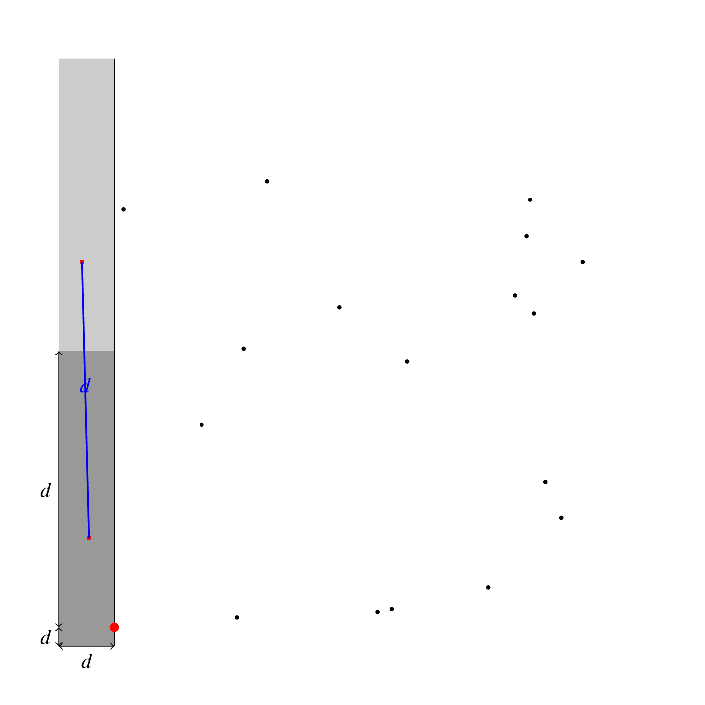

Algorithmique exacte
Source image : https://www.flickr.com/photos/x6e38/3440634940/
Une grande partie des stratégies de résolution est basée sur la résolution de sous-problèmes. On verra ainsi trois types de stratégies résumées dans le schéma suivant :

1 Recherche par force brute
1.1 Principe
Considérons un problème du type trouver un \(x \in V\) vérifiant une propriété \(P(x)\). Par exemple, \(V\) est l’ensemble des chaînes de caractère et \(P\) vérifie si une chaîne est un mot de passe qu’on cherche. Dans certains problèmes, un tel \(x\) n’est pas unique et on cherche à tous les énumérer.
Une recherche par force brute, ou recherche exhaustive, consiste à parcourir l’ensemble \(V\) jusqu’à obtenir une solution. Pour la recherche du mot de passe, on pourrait commencer par énumérer les chaînes de longueur 1, puis de longueur 2, et ainsi de suite.
Le plus souvent, l’ensemble \(V\) est fini (pour les mots de passe, cela peut consister à limiter la longueur maximale du mot de passe). Ainsi, une recherche par force brute effectue \(O(|V|)\) itérations.
Considérons le problème PlusProchePaire qui, étant donné un ensemble de \(n\) points (\(n \ge 2\)), détermine la paire constituée des deux points les plus proches.
Une implémentation naïve de la recherche par force brute consiste à énumérer les \(\frac{n(n-1)}{2}\) paires et donc à effectuer \(O(n^2)\) itérations.
let plus_proche_paire points =
let n = Array.length points in
let min_paire = ref (distance points.(0) points.(1), (0, 1)) in
for i = 0 to n - 1 do
for j = i+1 to n - 1 do
let d = distance points.(i) points.(j) in
if d < fst !min_paire
then min_paire := (d, (i, j))
done
done;
snd !min_paire1.2 Raffinement : droite de balayage
Il est parfois possible d’accélérer la recherche par force brute en ordonnant le parcours des candidats pour pouvoir éviter de tester certains d’entres eux.
En géométrie algorithmique, une approche classique consiste à ordonner les objets selon leur abscisse et à parcourir les objets par abscisse croissante. On parle alors de droite de balayage (en anglais, sweep line) car cela revient à balayer le plan par une droite verticale en ne traitant que les objets avant cette ligne.
Reprenons le problème précédent, on considère que les points sont triés par abscisse croissante : \((x_0,y_0), \dots, (x_{n-1}, y_{n-1})\). On va parcourir les points dans cet ordre en maintenant un ensemble de points à gauche du point courant, appelés points actifs, et en ne calculant que les intersections avec les points actifs.
Si on a parcouru les \(N\) premiers points et qu’on a obtenu que la plus petite distance était \(d\), lorsqu’on considère le point \((x_N,y_N)\), il est inutile de tester les points qui sont forcément à distance \(> d\) de celui-ci. C’est-à-dire qu’on peut éliminer les points qui ne sont pas dans le rectangle \([x_N-d,x_N]\times [y_N-d,y_N+d]\) du test. Les points dont l’abscisse est \(< x_N -d\) peuvent être éliminés définitivement vu que l’on raisonne par abscisse croissante, par contre, les points d’ordonnées invalides doivent être conservés pour les points ultérieurs.
Ce rectangle est représenté sur le schéma suivant ainsi qu’une ligne imaginaire qui correspond à l’abscisse du point courant et qu’on peut imaginer parcourant le plan de gauche à droite pour traiter les points au fur et à mesure.
Afin de déterminer la complexité de cet algorithme, il est nécessaire de connaitre le nombre maximal de points dans le rectangle. Comme ces points ont été pris en compte précédemment, ils sont forcément à distance au moins \(d\) les uns des autres. Il s’agit donc de déterminer le nombre maximum de points qu’on peut placer dans ce rectangle à distance au moins \(d\). On remarque tout d’abord qu’on peut placer six points ainsi :
Si jamais on avait au moins sept points, on peut voir qu’il y a forcément un des six sous-rectangles suivants qui contiendrait au moins deux points :
Or, ces sous-rectangles sont de longueur \(\frac{1}{2}d\) et de hauteur \(\frac{2}{3}d\), donc la distance maximale entre deux de leurs points correspond à la longueur des diagonales : \(\sqrt{\frac{1}{4} + \frac{4}{9}}d = \frac{5}{6}d < d\).
Comme un de ces six points est le point courant, il y a toujours au plus 5 points dans l’ensemble des points actifs.
Voici le principe de l’algorithme que l’on va implémenter :
On trie le tableau
pointspar ordre croissant. Complexité : \(O(n \log n)\)On initialise la plus petite distance
dcourante à la distance entre les deux premiers pointsOn crée un ensemble
actifs, ordonné par les ordonnées, de points contenant initialement les deux premiers pointsPour chaque point \((x,y)\) en partant du deuxième :
- On supprime les points \((x',y')\) tels que \(x' < x - d\) de
actifs. Complexité : sur l’ensemble des itérations on ne pourra jamais supprimer deux fois un point, donc on effectue au maximum \(n\) suppressions chacune en \(O(\log n)\) donc \(O(n \log n)\). - On parcourt les points de
actifsdont les ordonnées sont comprises entre \(y-d\) et \(y+d\). Complexité : pour récupérer le premier point de l’ensemble, il faut \(O(\log n)\) en pire cas (tous les points actifs) et ensuite on effectue au plus 5 itérations comme on vient de le prouver.
- On supprime les points \((x',y')\) tels que \(x' < x - d\) de
L’animation suivante présente le déroulement de cet algorihtme. La bande active est indiquée en gris et le rectangle autour du point courant en gris foncé :

On remarque ainsi que la complexité en temps et en pire cas de cet algorithme est de \(O(n \log n)\). Ici, le fait d’avoir la structure actifs ordonnée par les ordonnées est crucial pour garantir la complexité. Pour la réalisation d’une structure d’ensemble ordonnée ayant ces complexité, voir le chapitre FIXME.
Ici, on utilise le module Set d’OCaml pour réaliser la structure d’ensemble, pour cela on commence par créer le module PointSet pour les ensembles de points :
module Point = struct
type t = float * float
let compare (x1,y1) (x2,y2) = Stdlib.compare y1 y2
end
module PointSet = Set.Make(Point)Puis on définit une fonction permettant de parcourir les points entre deux ordonnées :
let set_iter_entre f set bas haut =
try
let e = PointSet.find_first (fun p -> snd p >= bas) set in
let seq = PointSet.to_seq_from e set in
let rec aux seq =
match seq () with
| Seq.Nil -> ()
| Seq.Cons (p, seq_suite) ->
if snd p <= haut
then begin
f p;
aux seq_suite
end
in aux seq
with Not_found -> ()On implémente alors assez directement l’algorithme décrit précédemment :
let plus_proche_paire_balayage points =
let compare (x1,y1) (x2,y2) =
if x1 = x2
then if y1 < y2 then -1 else 1
else if x1 < x2 then -1 else 1
in
Array.sort compare points;
let n = Array.length points in
let d = ref (distance points.(0) points.(1)) in
let couple = ref (points.(0), points.(1)) in
let actifs = ref (PointSet.empty
|> PointSet.add points.(0) |> PointSet.add points.(1)) in
let gauche = ref 0 in
for i = 2 to n-1 do
let xi, yi = points.(i) in
while fst points.(!gauche) < xi -. !d do
actifs := PointSet.remove points.(!gauche) !actifs;
incr gauche
done;
set_iter_entre (fun pj ->
let dip = distance points.(i) pj in
if dip < !d
then begin
couple := (points.(i), pj);
d := dip
end) !actifs (yi -. !d) (yi +. !d);
actifs := PointSet.add points.(i) !actifs
done;
!d1.2.1 Problème : test d’intersection pour un ensemble de segments
Considérons le problème suivant IntersectionEnsemble : étant donné \(n\) segments dans le plan, il s’agit de déterminer si au moins deux des segments s’intersectent.
La recherche par force brute va alors énumérer l’ensemble des paires de segments distincts et tester deux à deux les intersections. On peut ainsi écrire le programme suivant qui est assez simple et effectuera effectivement \(O(|v|^2)\) itérations dans le pire cas, i.e. lorsqu’il n’y a pas d’intersections.
exception Trouve
let intersection_ensemble (v: ((float * float) * (float * float)) array) : bool =
let n = Array.length v in
try
for i = 0 to n - 1 do
for j = i+1 to n-1 do
if intersecte v.(i) v.(j)
then raise Trouve
done
done;
false
with Trouve -> trueTODO approche par droite de balayage : algorithme de Shamos et Hoey (1976)
1.3 Recherche par retour sur trace (backtracking)
Dans des problèmes admettant des solutions partielles, on peut construire une solution par essai de toutes les possibilités en complétant tant qu’on a bien une solution partielle. La recherche par retour sur trace repose sur ce constat pour énumérer l’ensemble des solutions en utilisant la récursivité (d’où la notion de retour sur trace) pour les essais.
L’exemble classique de ce problème est celui des huit reines : étant donné un échiquier, peut-on placer huit reines de sorte qu’aucune reine ne puisse prendre une autre reine ? Plus précisément : sur un plateau de 8x8 cases, peut-on placer huit pions tels que deux pions quelconques ne soient jamais sur la même ligne ou la même diagonale ?
Exemple de solution :
Ce problème admet effectivement des solutions partielles en ne considérant que \(k\) reines à placer. Pour énumérer les solutions, on peut même se contenter de solutions partielles où les \(k\) reines sont placées sur les \(k\) premières rangées.
Voici ainsi un algorithme pour énumérer les solutions :
Supposons que \(k\) reines aient été placées et qu’on dispose d’une solution partielle.
- Si \(k = 8\) alors toutes les reines sont placées et la solution est complète, on la comptabilise
- Sinon, on continue la recherche pour chaque position de la \(k+1\) reine sur la \(k+1\) rangée qui préserve le fait d’être une solution partielle.
Ici, quand on dit qu’on continue la recherche, ce qu’on signifie c’est qu’on effectue un appel récursif.
Pour programmer cette méthode, on va définir une fonction récursive de signature :
val resout_reines : (int * int) list -> (int * int) list listUn appel à resout_reines part va ainsi renvoyer la liste des solutions complètes construites à partir de la solution partielle part. Les solutions sont représentées par des listes de couples de coordonnées sur l’échiquier, donc dans \([|0;7|]^2\)
Voici une implémentation où on explore les solutions à l’aide d’une boucle impérative dans l’appel récursif. La fonction valide permet de tester si le placement d’une reine est possible avant d’effectuer un appel.
let rec valide (x1,y1) l =
match l with
| [] -> true
| (x2,y2)::q ->
x1 <> x2 && abs (x2-x1) <> abs(y2-y1) && valide (x1,y1) q
let rec resout_reines part =
let k = List.length part in
if k = 8
then [ part ]
else begin
let resultats = ref [] in
for x = 0 to 7 do
let essai = (x,k) :: part in
if valide (x,k) part
then begin
resultats := (resout_reines essai) @ !resultats;
end
done;
!resultats
endet, ici, une autre implémentation purement récursive à l’aide d’une fonction récursive.
let rec resout_reines part =
let k = List.length part in
if k = 8
then [ part ]
else
let rec aux x acc =
if x < 0
then acc
else let essai = (x,k) :: part in
let nacc = if valide (x,k) part
then (resout_reines essai) @ acc
else acc in
aux (x-1) nacc
in
aux 7 [] Une partie de l’arbre de recherche est présenté sur l’image suivante :

L’arbre complet comporte 2057 noeuds dont 92 feuilles correspondant aux solutions du problème. A titre de comparaison, l’arbre exhaustif correspondant à faire tous les choix de placement à raison d’une reine par ligne compterait \(8^8 = 16777216\) noeuds. On voit bien que le backtracking est plus économe en exploration.
1.3.1 Problème : résolution de Sudoku
La recherche par retour sur trace se prête très bien à la résolution de problèmes comme le Sudoku. On va ici tout simplement tenter de remplir chaque case du haut vers le bas tant qu’on satisfait les contraintes du Sudoku. Le programme sera ainsi très proche de la résolution des huit reines.
Commençons par rappeler le principe du Sudoku :
On part d’une grille de 81 cases réparties en une grille de 3x3 sous-grilles de 3x3 cases et comportant des chiffres de 1 à 9 dans certaines cases.
L’objectif est de remplir chaque case avec un chiffre de 1 à 9 de sorte que chaque ligne, chaque colonne et chaque sous-grille 3x3 comporte une et une seule fois chaque chiffre.
Un sudoku admet une unique solution.
Pour représenter une grille de Sudoku en OCaml on utilise un (int option) array array, la valeur None signifiant que la case est vide et la valeur Some x qu’elle est remplie avec la valeur \(x\).
type grille = (int option) array arrayOn fait le choix de représenté la grille par un tableau de lignes, ce qui signiie que pour accèder à la case de coordonnée \((x,y)\) dans g il faut écrire g.(y).(x).
Le problème donnée précédemment est alors représenté par la valeur suivante :
let probleme = [|
[| Some 1; None; None; None; None; None; None; None; Some 6 |];
[| None; None; Some 6; None; Some 2; None; Some 7; None; None |];
[| Some 7; Some 8; Some 9; Some 4; Some 5; None; Some 1; None; Some 3 |];
[| None; None; None; Some 8; None; Some 7; None; None; Some 4 |];
[| None; None; None; None; Some 3; None; None; None; None |];
[| None; Some 9; None; None; None; Some 4; Some 2; None; Some 1 |];
[| Some 3; Some 1; Some 2; Some 9; Some 7; None; None; Some 4; None |];
[| None; Some 4; None; None; Some 1; Some 2; None; Some 7; Some 8 |];
[| Some 9; None; Some 8; None; None; None; None; None; None |];
|]Afin de définir la fonction de résolution, on définit une première fonction suivant de signature :
val suivant : grille -> (int * int) -> (int * int) optiontelle que l’appel à suivant g (x,y) renvoie Some (xi,yi) quand \((x_i,y_i)\) sont les coordonnées de la prochaine case libre, dans l’ordre gauche à droite puis haut vers bas, après \((x,y)\) ou None quand il n’existe pas de telle case libre. Cela signifie alors que la grille est entièrement remplie.
let rec suivant g (x,y) =
if y > 8
then None
else if g.(y).(x) = None
then Some (x,y)
else if x < 8 then suivant g (x+1, y)
else suivant g (0, y+1)On définit également une fonction valide de signature
val valide : grille -> int -> int -> booltelle que l’appel à valide g x y renvoie true si et seulement si la valeur placée en coordonnée \((x,y)\) n’invalide pas la grille. Ne pas prendre cette valeur en paramètre permettant d’écrire un peu plus simplement cette fonction. La fonction est assez directe, étant donné \((x,y)\) on va parcourir sa ligne, sa colonne et sa sous-grille pour vérifier qu’un nombre n’a pas été placé deux fois à l’aide d’un tableau de drapeaux :
let valide g x y =
let v = ref true in
let vus_colonne = Array.make 9 false in
for y0 = 0 to 8 do
match g.(y0).(x) with
| None -> ()
| Some k ->
if vus_colonne.(k-1)
then v := false;
vus_colonne.(k-1) <- true
done;
let vus_ligne = Array.make 9 false in
for x0 = 0 to 8 do
match g.(y).(x0) with
| None -> ()
| Some k ->
if vus_ligne.(k-1)
then v := false;
vus_ligne.(k-1) <- true
done;
let vus_grille = Array.make 9 false in
let xb = (x / 3) * 3 in
let yb = (y / 3) * 3 in
for xd = 0 to 2 do
for yd = 0 to 2 do
match g.(yb+yd).(xb+xd) with
| None -> ()
| Some k ->
if vus_grille.(k-1)
then v := false;
vus_grille.(k-1) <- true
done
done;
!vOn peut alors définir la fonction resout qui va résoudre le Sudoku en effectuant tous les remplissages tant qu’on a une grille valide. Dès qu’une solution est trouvé, on s’arrête. Pour cela, on utilise le mécanisme des exceptions pour permettre une sortie prématurée. On a fait le choix de travailler en place dans la grille, ainsi à la fin de l’exécution de la fonction, la grille correspond à la solution.
exception Solution
let resout g =
let rec aux xi yi = match suivant g (xi, yi) with
| None -> raise Solution
| Some (x,y) ->
for i = 1 to 9 do
g.(y).(x) <- Some i;
if valide g x y
then begin
aux x y
end
done;
g.(y).(x) <- None
in
try
aux 0 0
with Solution -> ()La résolution du Sudoku donnée précédemment par ce programme est présenté dans la vidéo suivante :
2 Algorithmes gloutons
2.1 Principe
On considère ici un problème d’énumération comme dans la section précédente muni d’une fonction d’objectifs qui attribue une valeur numérique aux solutions et aux solutions partielles.
Soit \(f : P \rightarrow \R\) une telle fonction, où \(S \cup P\) est l’ensemble des solutions du problème d’énumération et \(P\) l’ensemble des solutions partielles, on se pose maintenant le problème de l’optimalité vis-à-vis de \(f\) : déterminer \(x \in S\) tel que \(f(x) = \max_{y \in S} f(y)\) on note souvent \(x = \text{argmax}_{y\in S} f(y)\). On parle alors de problème d’optimisation combinatoire.
Une première stratégie très élémentaire consiste alors à énumérer \(S\), de manière exhaustive ou avec une stratégie plus fine comme le retour sur trace, puis à déterminer un élément maximal de manière directe.
Cela revient donc à déterminer l’arbre des solutions puis à trouver une feuille maximisant l’objectif :
Un algorithme glouton va suivre une approche beaucoup plus efficace : à chaque étape de construction de la solution, on choisit la branche qui maximise la fonction d’objectif. C’est-à-dire que si en partant d’une solution partielle \(x \in P\) il est possible de l’étendre en d’autres solutions partielles \(p_x = \{ y_1, ..., y_n \}\), on va choisir \(y = \text{argmax}_{t \in p_x} f(t)\) la solution qui maximise localement \(f\).
Sur l’arbre précédent, cela reviendrait à n’emprunter qu’une seule branche :
Cela a l’air très efficace mais il y a un problème majeur : il n’y a aucune garantie qu’on aboutisse ainsi à une solution, encore moins à une solution optimale. En effet, on aurait très bien pu faire les choix suivants :
et ne pas aboutir à une solution.
Considérons par exemple le problème du rendu de monnaie : étant donné, une liste de valeurs faciales de pièces \(P = (v_1,\dots,v_p) \in (\N^*)^p\) avec \(1 = v_1 < \dots < v_p\) et une somme \(n \in \N^*\), on cherche la manière d’exprimer cette somme avec le plus petit nombre de pièces possible.
Plus précisément, l’ensemble des solutions \(S = \{ (k_1,\dots,k_p) \in N^p ~|~ k_1 v_1 + \dots + k_p v_p = n \}\) et la fonction d’objectif est \(f : (k_1,\dots,k_p) \mapsto k_1 + \dots + k_p\). Les solutions partielles ici sont les réalisations de valeur \(< n\). On cherche alors \(x = argmin_{y \in S} f(y)\).
Comme \(1 = v_1\), \(S \neq \emptyset\) car \((n,0,\dots,0) \in S\) et ainsi \(f(x) \le n\).
L’algorithme glouton va utiliser la plus grande pièce possible à chaque étape puis on applique l’algorithme glouton sur la somme restante sauf si elle est nulle, ce qui constitue la condition d’arrêt.
Exemple 1
- \(P = (1, 2, 5, 10)\)
- \(n = 14\)
- On utilise la plus grande pièce possible \(10 \le 14\) puis on exprime \(4 = 14 - 10\)
- Ici, la plus grande pièce est \(2\) et on continue avec \(2 = 4 - 2\)
- La plus grande pièce est encore \(2\) et on s’arrête car \(0 = 2 - 2\).
- En conclusion, on a obtenu \(x = (0,2,0,1)\).
- Une exploration exhuastive permet de s’assurer qu’on a effectivement obtenu une décomposition minimale. En effet, ici l’ensemble des décompositions est : { (14,0,0,0), (12,1,0,0), (8,3,0,0), (6,4,0,0), (4,5,0,0), (2,6,0,0), (0,7,0,0), (9,0,1,0), (7,1,1,0), (5,2,1,0), (3,3,1,0), (1,4,1,0), (4,0,2,0), (2,1,2,0), (0,2,2,0), (4,0,0,1), (2,1,0,1), (0,2,0,1) }.
Exemple 2
- \(P = (1, 2, 7, 10)\)
- \(n = 14\)
- L’algorithme glouton va ici procéder comme dans l’exemple 1 et on va obtenir \(x = (0,2,0,1)\).
- Mais on remarque que ce n’est pas un minimum car \(x' = (0,0,2,0)\) convient avec \(f(x') = 2 < 3 = f(x)\).
Conclusion l’algorithme glouton n’a effectivement pas de raisons d’être optimal.
On peut se poser la question des algorithmes pour lesquels l’algorithme glouton aboutit nécessairement à une solution optimale.
2.2 Construction de l’arbre de Huffman
On va étudier ici un principe de compression parfaite (sans perte d’information à la décompression) de données appelé l’algorithme de Huffman et qui repose sur ce principe simple : coder sur moins de bits les caractères les plus fréquents.
Par exemple si on considère le mot abaabc, en le codant avec un nombre de bits fixes, par exemple 2 avec le code a=00,b=01,c=10, on aurait besoin de 12 bits pour représenter le mot. Mais si on choisit le code suivant : a=0,b=10,c=11, il suffit de 9 bits. On a donc gagné 3 bits soit un facteur de compression de 75%.
On remarque que pour pouvoir décompreser, il n’aurait pas été possible de faire commencer le code de b ou c par un 0, sinon on aurait eu une ambiguité avec la lecture d’un a. On parle alors de code préfixe :
On se pose alors la question du code préfixe optimal pour un texte donné.
Plus précisément, étant donné un alphabet fini \(\Sigma\) et une application \(f : \Sigma \rightarrow [0,1]\) associant à chaque lettre son nombre d’occurences dans le texte considéré. Ainsi \(\sum_{x \in \Sigma} f(x)\) est la longueur du texte. On cherche un code préfixe \(X\) et une application \(c : \Sigma \rightarrow X\) telle que \(\sum_{x \in \Sigma} f(x) |c(x)|\) soit minimale car cela correspond au nombre de bits après codage.
L’application de codage \(c\) peut être représenté par un arbre binaire où les arêtes gauches correspondent à 0, les arêtes droites à 1 et les feuilles aux éléments de \(\Sigma\) dont les étiquettes des chemins y menant depuis la racine de l’arbre correspondent à leur image par \(c\).
Par exemple, pour le code \(a=0,b=10,c=11\) on aurait l’arbre :
Avec un tel arbre, il est très simple de décoder le texte codé car il suffit de suivre un chemin dans l’arbre jusqu’à tomber sur une feuille, produire la lettre correspondante, puis repartir de la racine de l’arbre. La longueur du code associé à une lettre est alors égale à la profondeur de la feuille correspondante. L’optimalité du codage préfixe est ainsi équivalente à la minimalité de l’arbre vis-à-vis de la fonction d’objectif \(\varphi(t) = \sum_{x \in \Sigma} f(x) p(t,x)\) où \(p(t,x)\) est la profondeur de la feuille d’étiquette \(x\) dans l’arbre \(t\) ou \(0\) si \(x\) n’est pas une des étiquettes, cet extension permettant d’étendre la fonction d’objectif aux solutions partielles.
L’algorithme d’Huffman va construire un arbre correspondant à un codage optimal à l’aide d’une file de priorité d’arbres. On étend pour cela l’application \(f\) à de tels arbres en définissant que si \(t\) est un arbre de feuilles \(x_1,\dots,x_n\) alors \(f(t) = f(x_1) + \dots + f(x_n)\).
Au départ, on place dans la file des arbres réduits à une feuille pour chaque élément \(x \in \Sigma\) et dont la priorité est \(f(x)\).
Tant que la file contient au moins deux éléments
- on retire les deux plus petits éléments \(x\) et \(y\) de la file de priorité \(f(x)\) et \(f(y)\)
- on ajoute un arbre \(z = Noeud(x,y)\) de priorité \(f(z) = f(x) + f(y)\).
On renvoie l’unique élément restant dans la file.
L’implémentation de cet algorithme est alors assez directe avec une file de priorité. On réutilise ici la structure de tas implementée en FIXME. Comme il s’agit d’un tas max, on insère avec \(-f(x)\) comme valeur.
let construit_arbre occ =
let arbres = Tas.cree 2000 (0, Feuille 0) in
for i = 0 to 255 do
let f = occ.(i) in
if f > 0 (* on ignore les occurrences nulles *)
then Tas.insere (-f, Feuille i) arbres
done;
while Tas.taille arbres > 1 do
let fx, x = Tas.supprime_racine arbres in
let fy, y = Tas.supprime_racine arbres in
Tas.insere (fx+fy, Noeud(x,y)) arbres
done;
snd (Tas.supprime_racine arbres)ERROR: src/algorithmique/../../snippets/algorithmique/huffman.c does not existERROR: src/algorithmique/../../snippets/algorithmique/huffman.py does not existL’algorithme de Huffman est un algorithme glouton car si on considère pour solution partielle la fôret présente dans la file et pour objectif la fonction \(\varphi\) étendue aux fôrets en sommant la valeur de \(\varphi\) sur chaque arbre, alors fusionner dans la fôret \(F\) deux arbres \(x\) et \(y\) en la transformant en une fôret \(F'\) va avoir l’impact suivant sur la fonction d’objectif :
\[ \varphi(F') = \varphi(F) + f(x) + f(y) \]
car, en effet, on va rajouter 1 à la profondeur de chaque feuille et donc on passe pour la contribution de \(x\) de \(\varphi(x) = \sum_{c \in \Sigma} f(c) p(x,c)\) à \(\sum_{c \in \Sigma} f(c) (p(x,c)+1) = \varphi(x) + \sum_{c \in \Sigma} f(c) = \varphi(x) + f(x)\).
On remarque ainsi que la fusion qui minimise localement \(\varphi\) est celle qui fusionne les deux arbres de plus petite valeur pour \(f\).
Pour montrer que l’algorithme glouton produit ici un codage minimal, on va utiliser une technique classique qui consiste à montrer qu’étant donné une solution optimale, on peut toujours la transformer sans augmenter sa valeur pour obtenir, de proche en proche, la solution renvoyée par le glouton.
Le théorème suivant permet de raisonner par récurrence en diminuant le nombre de lettres.
2.3 Preuve d’optimalité
Dans le paragraphe précédent, on retrouve un schéma de preuve classique pour les preuves d’optimalité des algorithmes gloutons :
- Montrer qu’à partir d’une solution optimale, il est possible de déterminer une solution optimale ayant fait le même choix que l’algorithme glouton. Pour Huffman c’était le fait d’avoir un arbre optimal ayant les deux lettres les moins fréquentes comme sœurs à profondeur maximale.
- Montrer qu’une solution optimale se comportant comme le résultat de l’algorithme glouton à une étape ne peut être meilleure que le résultat de l’algorithme glouton.
2.4 Sélection d’activités
2.4.1 Description
Étant donné un ensemble d’activités données par leur temps de début et leur temps de fin (on considère les temps comme des entiers pour simplifier), on se pose la question du nombre maximal d’activité que l’on puisse sélectionner sans que deux activités soient en conflits. Cela correspond par exemple à l’organisation du planning d’un employé.
On dit que deux activités \((d_1,f_1)\) et \((d_2,f_2)\) sont en conflits quand \([d_1,f_1[ \cap [d_2,f_2[ \neq \emptyset\).
Ici, \(t_1\) et \(t_2\) sont en conflits avec \(t_3\). Mais \(t_1\) et \(t_2\) ne sont pas en conflit. On considère que deux activités peuvent se succéder directement : \(f_1 = d_2\).
On considère donc en entrée de ce problème une suite finie \(( (d_1,f_1), \dots, (d_n,f_n) )\) et on cherche un sous-ensemble \(I \subset \range{1}{n}\) de plus grand cardinal tel que pour tous \(i, j \in I\), si \(i \neq j\) alors \((d_i,f_i)\) et \((d_j,f_j)\) ne sont pas en conflits. On dit que \(I\) est un ensemble indépendant.
2.4.2 Algorithme glouton et implémentation
Pour résoudre ce problème, on considère l’algorithme glouton associé à la fonction d’objectif cardinal et en triant les activités ordre croissant de temps de fin.
Cet algorithme est implémenté dans le programme suivant :
#include <stdio.h>
#include <stdlib.h>
typedef struct {
unsigned int id;
unsigned int debut;
unsigned int fin;
unsigned char selectionnee;
} activite;
int compare_activites(const void *t1, const void *t2)
{
return ((activite *)t1)->fin - ((activite *)t2)->fin;
}
void selectionne(activite *activites, size_t nb_activites)
{
size_t derniere_activite = 0;
/* on commmence par trier en O(n log2 n) les activites
* selon le temps de fin */
qsort(activites, nb_activites,
sizeof(activite), compare_activites);
activites[0].selectionnee = 1;
for (size_t i = 1; i < nb_activites; i++)
{
if (activites[i].debut >= activites[derniere_activite].fin)
{
activites[i].selectionnee = 1;
derniere_activite = i;
}
}
}
int main()
{
activite activites[] = {
{ 0, 1, 3, 0 }, { 1, 3, 4, 0 }, { 2, 2, 5, 0 },
{ 3, 5, 9, 0 }, { 4, 11, 12, 0 }, { 5, 8, 10, 0 },
{ 6, 0, 7, 0 }
};
size_t nb_activites = sizeof(activites) / sizeof(activite);
selectionne(activites, nb_activites);
for (size_t i = 0; i < nb_activites; i++)
{
printf("Activité %d (%d,%d) : %d\n",
activites[i].id, activites[i].debut,
activites[i].fin, activites[i].selectionnee);
}
return 0;
}Ce programme produit alors la sortie :
Activité 0 (1,3) : 1
Activité 1 (3,4) : 1
Activité 2 (2,5) : 0
Activité 6 (0,7) : 0
Activité 3 (5,9) : 1
Activité 5 (8,10) : 0
Activité 4 (11,12) : 12.4.3 Preuve d’optimalité
On va prouver que l’algorithme glouton renvoie un ensemble indépendant optimal. Le fait que l’ensemble soit indépendant étant direct, on se concentre sur la preuve d’optimalité en présentant un schéma de preuve qui correspond à celui identifié dans le paragraphe précédent.
2.5 Ordonnancement de tâches
2.5.1 Description
On considère ici un problème voisin du problème précédent. On considère \(n\) tâches \(T = \{ t_1, \dots, t_n \}\) prenant une unité de temps pour être traitées sur une unité de calcul.
Chaque tâche \(t\) dispose d’une date limite \(f(t) \in \range{1}{n}\) (deadline) à laquelle elle doit être traitée sans quoi on écope d’une pénalité \(p(t) \in \N\).
On appelle stratégie d’ordonnancement une application \(d : T \rightarrow \range{0}{n-1}\) qui associe à chaque tache un unique temps de début \(d(t)\). Selon cette stratégie, on déduit une séparation de \(T\) en deux ensembles disjoints :
- \(T^+(d)\) l’ensemble des tâches traitées dans les délais : \(t \in T^+(d) \iff d(t) < f(t)\).
- \(T^-(d)\) l’ensemble des tâches traitées en retard : \(t \in T^-(d) \iff d(t) \ge f(t)\).
On note alors \(P(d) = \sum_{t \in T^-(d)} p(t)\) la somme des pénalités des tâches en retard.
On cherche à obtenir une stratégie d’ordonnancement de valeur \(P(d)\) minimale.
On remarque que l’ordonnancement des tâches en retard n’a aucune importance, et on peut donc se contenter de déterminer une stratégie d’ordonnancement pour les tâches traitées dans les délais et la compléter par n’importe quel ordonnancement des autres tâches. On peut ainsi reformuler le problème : déterminer un sous-ensemble \(T^+ \subset T\) de tâches pouvant être traitées dans les délais tel que \(\sum_{t \in T^+} p(t)\) soit maximale.
2.5.2 Algorithme glouton et implémentation
On résout maintenant ce problème de maximisation des pénalités \(T^+\) par un algorithme glouton :
- On commence avec \(T^+ = \emptyset\) et tous les temps de \(\range{0}{n-1}\) sont marqués comme étant disponibles.
- On parcourt les tâches dans l’ordre décroissant des pénalités.
- Quand on considère la tâche \(t\) s’il existe un temps \(i\) disponible tel que \(i < d(t)\) alors on marque comme indisponible le temps \(i_0 = \max \enscomp{i \in \range{0}{n-1}}{i < d(t) \text{ et } i \text { disponible} }\) et on rajoute alors \(t\) à \(T^+\) en commençant \(t\) au temps \(i_0\).
- On place les tâches restantes aux temps disponibles.
Pour les structures de données, on utilise une représentation en tableaux de booléens (des unsigned char à 0 ou 1 en C) pour la disponibilités des temps. L’ensemble \(T^+\) est alors implicite car il correspond aux tâches ordonnancé dans la première étape. Utiliser un tableau implique qu’une recherche linéaire soit faite pour chercher un plus grand temps disponible, et donc, la complexité temporelle globale sera en \(O(n^2)\).
Le programme C suivant implémente cet algorithme.
#include <stdio.h>
#include <stdlib.h>
#include <string.h>
typedef struct {
unsigned int id;
unsigned int date_limite;
unsigned int penalite;
int debut; /* -1 tant que la tâche n'est pas ordonnancée */
} tache;
int compare_taches(const void *t1, const void *t2)
{
return ((tache *)t2)->penalite - ((tache *)t1)->penalite;
}
void *ordonnancement(tache *taches, size_t nb_taches)
{
unsigned char *temps_occupe = malloc(sizeof(unsigned char) * nb_taches);
memset(temps_occupe, 0, nb_taches);
/* tri des activités par ordre décroissant des pénalités */
qsort(taches, nb_taches, sizeof(tache), compare_taches);
/* T+ par algorithme glouton */
for (size_t k = 0; k < nb_taches; k++)
{
int i0 = -1;
for (size_t i = 0; i < nb_taches; i++)
{
if (temps_occupe[i] == 0 && i < taches[k].date_limite)
i0 = i;
}
if (i0 >= 0)
{
taches[k].debut = i0;
temps_occupe[i0] = 1;
}
}
/* Complétion par les tâches en retard */
int i = 0; // indice du dernier temps disponible utilisé
for (size_t k = 0; k < nb_taches; k++)
{
if (taches[k].debut == -1)
{
while(temps_occupe[i] == 1)
i++;
taches[k].debut = i;
temps_occupe[i] = 1;
}
}
free(temps_occupe);
}
int main()
{
tache taches[] = {
{ 1, 1, 3, -1 }, { 2, 2, 6, -1 }, { 3, 3, 4, -1 },
{ 4, 4, 2, -1 }, { 5, 4, 5, -1 }, { 6, 4, 7, -1 },
{ 7, 6, 1, -1 }
};
size_t nb_taches = sizeof(taches) / sizeof(tache);
ordonnancement(taches, nb_taches);
for (size_t i = 0; i < nb_taches; i++)
{
printf("T%d (f:%d,p:%d) @ %d\n", taches[i].id, taches[i].date_limite,
taches[i].penalite, taches[i].debut);
}
return 0;
}Il produit la sortie :
T6 (f:4,p:7) @ 3
T2 (f:2,p:6) @ 1
T5 (f:4,p:5) @ 2
T3 (f:3,p:4) @ 0
T1 (f:1,p:3) @ 4
T4 (f:4,p:2) @ 6
T7 (f:6,p:1) @ 5Ce qui correspond à l’ordonnancement \(t_3, t_2, t_5, t_6, t_1, t_7, t_4\). Les tâches \(t_1\) et \(t_4\) sont en retard, donc la pénalité totale est de 5.
2.5.3 Preuve d’optimalité
On va montrer que cet algorithme glouton renvoie un ensemble \(T^+\) optimal. Pour cela, on procède comme précédemment. Tout d’abord, on montre qu’il existe une solution optimale qui effectue le premier choix de l’algorithme glouton.
On montre maintenant qu’en enlevant le choix glouton, on obtient une solution optimale du sous-problème.
On conclut alors directement par récurrence sur le nombre de tâches comme on l’a fait précédemment pour la sélection d’activités :
3 Diviser pour régner
3.1 Principe
Le principe des algorithmes dits Diviser pour régner est de décomposer un problème en plusieurs sous-problèmes disjoints et de déduire des solutions de ces sous-problème une solution au problème de départ.
Le point clé pour ce principe est de pouvoir fusionner les solutions de sous-problèmes pour en faire une solution, et de pouvoir le faire dans un temps/espace raisonnable. On procède alors par récursivité en appliquant ce principe pour résoudre les sous-problèmes eux-mêmes jusqu’à tomber sur des sous-problèmes très simples.
3.2 Tri fusion
L’algorithme du tri fusion est un des exemples les plus important d’algorithmes Diviser pour régner :
- Étant donnée une liste \(l\) de taille \(n \ge 2\), on va considérer les sous-listes \(l_p\) des valeurs d’indice pair et \(l_i\) des valeurs d’indice impair.
- On trie ensuite \(l_1\) et \(l_2\) pour obtenir \(l'_1\) et \(l'_2\).
- On fusionne ces deux listes pour obtenir \(l' = \text{fusion}(l'_1,l'_2)\) liste triée déduite de \(l\).
Comme expliqué dans le paragraphe précédent, les tris de \(l_1\) et \(l_2\) s’effectuent eux-aussi à l’aide d’un tri fusion.
Voici une implémentation en OCaml de cet algorithme :
let rec separe_en_deux l =
match l with
| [] -> ([], [])
| [x] -> ([x], [])
| x::y::q -> let l1, l2 = separe_en_deux q in
(x::l1, y::l2)
let rec fusionne l1 l2 =
match l1, l2 with
| [], _ -> l2
| _, [] -> l1
| x::q1, y::q2 ->
if x < y
then x :: (fusionne q1 l2)
else y :: (fusionne l1 q2)
let rec tri_fusion l =
match l with
| [] -> []
| [x] -> [x]
| _ ->
let l1, l2 = separe_en_deux l in
let l1p = tri_fusion l1 in
let l2p = tri_fusion l2 in
fusionne l1p l2p
La correction et la terminaison de cet algorithme ne posant aucune difficulté, on va se concentrer sur le calcul de la complexité temporelle :
separe_en_deuxconsiste en un parcours linéaire de la listeldonc \(O(|l|)\).fusionnesupprime un élément d’une des deux listes à chaque appel récursif, donc une complexité en \(O(|l_1|+|l_2|)\).- Pour
tri_fusionla situation est plus complexe en raison du double appel récursif. On va d’abord traiter le cas des listes contenant \(2^k\) éléments.
Notons \(t_n\) la complexité temporelle pour \(|l|=n\).
Le programme suivant présente une implémentation du tri fusion reposant sur des tableaux. Les sous-tableaux sont manipulés à l’aide de leurs indices de début et de fin comme pour la recherche dichotomique.
let rec separe_en_deux l =
match l with
| [] -> ([], [])
| [x] -> ([x], [])
| x::y::q -> let l1, l2 = separe_en_deux q in
(x::l1, y::l2)
let rec fusionne l1 l2 =
match l1, l2 with
| [], _ -> l2
| _, [] -> l1
| x::q1, y::q2 ->
if x < y
then x :: (fusionne q1 l2)
else y :: (fusionne l1 q2)
let rec tri_fusion l =
match l with
| [] -> []
| [x] -> [x]
| _ ->
let l1, l2 = separe_en_deux l in
let l1p = tri_fusion l1 in
let l2p = tri_fusion l2 in
fusionne l1p l2p
3.3 Nombre d’inversions
On cherche dans ce paragraphe à calculer \(I(t)\) efficacement. Remarquons tout d’abord qu’un algorithme naïf est en \(O(n^2)\) où \(|t|=n\) en explorant toutes les paires :
size_t inversions(int *t, size_t taille)
{
size_t inv = 0;
for (size_t i = 0; i < taille; i++)
{
for (size_t j = i+1; j < taille; j++)
{
if (t[i] > t[j]) inv++;
}
}
return inv;
}On va maintenant donner un algorithme type Diviser pour régner :
- On sépare \(t\) en deux moitiés \(t_1\) et \(t_2\).
- On calcule \(I(t_1)\) et \(I(t_2)\) par des appels récursifs.
- On compte les inversions entre des éléments de \(t_1\) et des éléments de \(t_2\)
- Cela ne dépend pas de leur position dans \(t_1\) ou dans \(t_2\).
- On peut donc trier \(t_1\) en \(t'_1\) et \(t_2\) en \(t'_2\).
- On compte \(N(t_1,t_2) = N(t'_1,t'_2)\) le nombre d’inversions entre \(t'_1\) et \(t'_2\).
- On en déduit que \(I(t) = I(t_1) + I(t_2) + N(t_1,t_2)\).
Pour calculer le nombre d’inversions entre deux tableaux triés \(t'_1\) et \(t'_2\) on peut utiliser l’algorithme en \(O(|t'_1| + |t'_2|)\) suivant : pour \(j\) parcourant les indices de \(t'_2\), on cherche le plus petit \(i\) tel que \(t'_1[i]\).
3.4 Points les plus proches
3.5 Sous-ensemble de somme donnée
3.6 Recherche dichotomique
3.7 Couverture par des segments égaux
4 Programmation dynamique
4.1 Principe
4.2 Somme de sous-ensembles
4.3 Ordonnancement de tâches
4.4 Plus longue sous-suite commune
4.5 Distance d’édition
 Marc de Falco
Marc de Falco